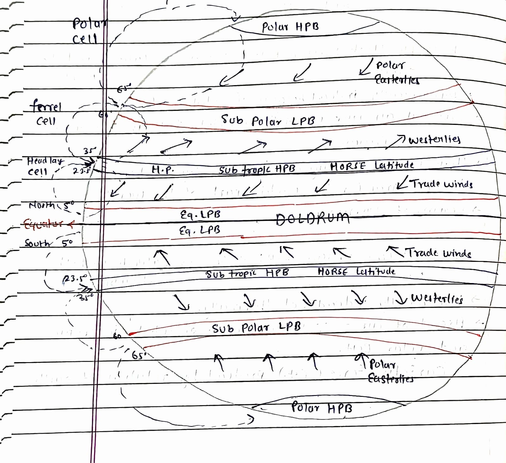

Earth’s Pressure Belt

1. Equatorial Low Pressure Belt (1 BELT)
- Sun, earth heats up, air warms up and rises.
- Thermally induced → vertical rays of sun.
- Expand, becomes light, goes up = low pressure.
- 5° North – 5° South (Latitude).
- Belt shifts a bit during winter and summer solstice (migration of sun).
- Light feeble variable winds creating frequent calm conditions, only vertical current → Doldrum Belt.
- Eq. LPB AKA North East trade winds (North)
- South → convergence zone
2. Sub Tropic High Pressure Belt (2 BELT)
- 23.5° – 35° latitude in both hemisphere.
- Dynamically induced because of rotation of earth.
- Equatorial air rises up, gets deflected, falls in this area.
- ∴ High pressure.
- High pressure creating dry condition, dry air hence deserts in this area (in the western part of the world).
- Region of Divergence.
3. Sub Polar Low Pressure Belt (2 BELT)
- 60° – 65° latitude in both hemisphere.
- Dynamically induced not thermally.
- Ascent of air = ∴ of convergence of sub tropic and polar belt.
- Coriolis force (C.F) produced by rotation of earth.
4. Polar High Pressure Belt (2 BELT)
- Sun not vertical, hence low temp.
- Air compress, density high hence pressure high.
- Thermal and dynamic both.
- High altitude, thin air (existing air), spreads out due to rotation.
- This gives space for coming air from low pressure belt.
Note:
- Coriolis force (CF), wind deflects to right in northern hemisphere.
- To left in southern hemisphere.
- Horizontal movement of air = wind.
- Vertical movement of air = current.
Cyclone
- Wind counter clockwise in northern hemisphere.
- Low pressure.
- Air will converge and rise.
Anticyclone
- Wind clockwise in southern hemisphere.
- High pressure.
- Air will diverge at surface and subside from above.
Trade Winds
- Sub tropic HPB to equatorial LPB.
- One is NE trade wind in northern hemisphere.
- One is SE trade wind in southern hemisphere.
Westerlies
- Sub tropic HPB to Sub polar LPB.
- AKA roaring forties / furious forties / brave west winds.
Polar Easterlies
- Polar HPB to sub polar LPB.
- AKA easterlies.
- Extremely cold & dry.